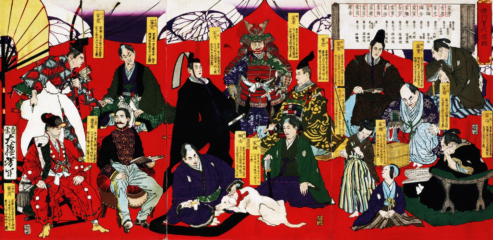
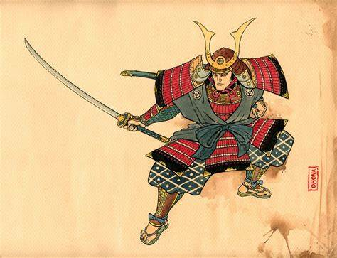
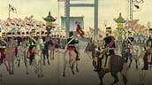

General Information
The history of feudalism in medieval Japan.

Type of Government
Who had power and who they got it from.
Rights and Freedoms
What rights citizens had, and who had these rights.
Economy
How feudal Japan's economy sustained itself.

Values
The important values and ideals of feudal Japan.

Pitfalls
The weaknesses of the Japanese feudalist system.